Paisley Maschmeier's Assignment 5: Lamps Part 2 and Molds Part 1
Part 1: Lamps Part 2
This was my original idea for a lamp, but instead of the laser printed bottom I decided I wanted to take advantage of the organic shapes the rhino is supposedly so good for.
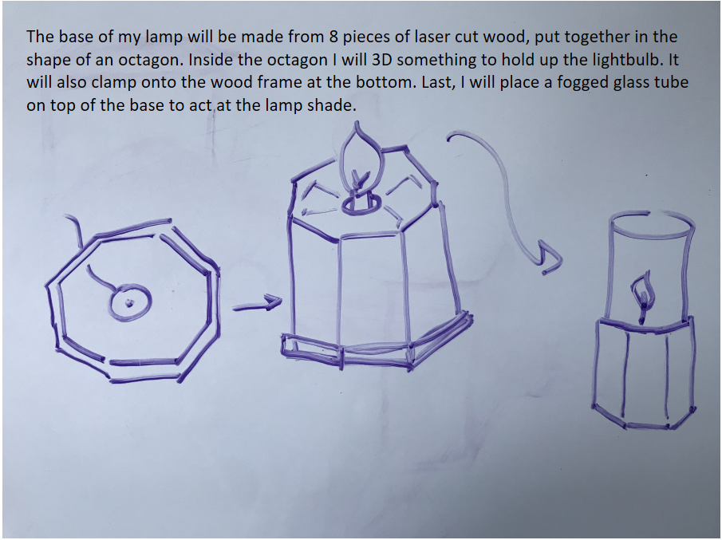I was inspired by this video
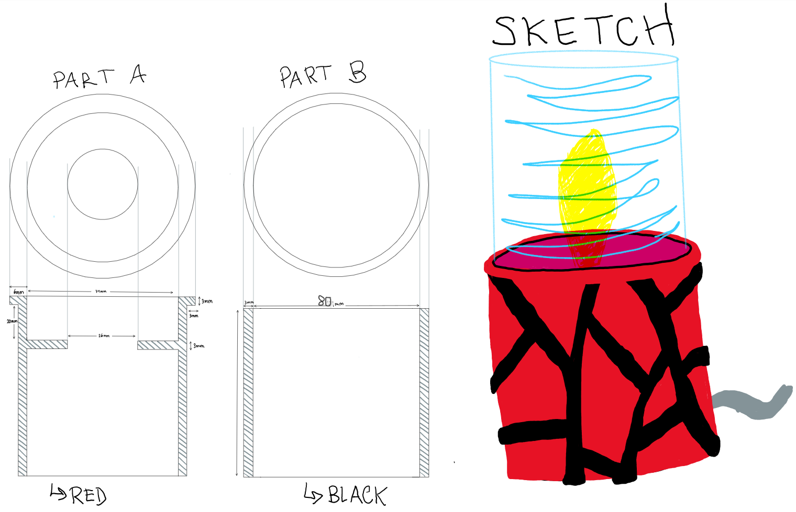So I was tring to make a lamp bottom like the in picture, but I could not get the flat design to wrap fully around and become a closed cylinder. I tried to do this for many many many hours and then decided to change course.
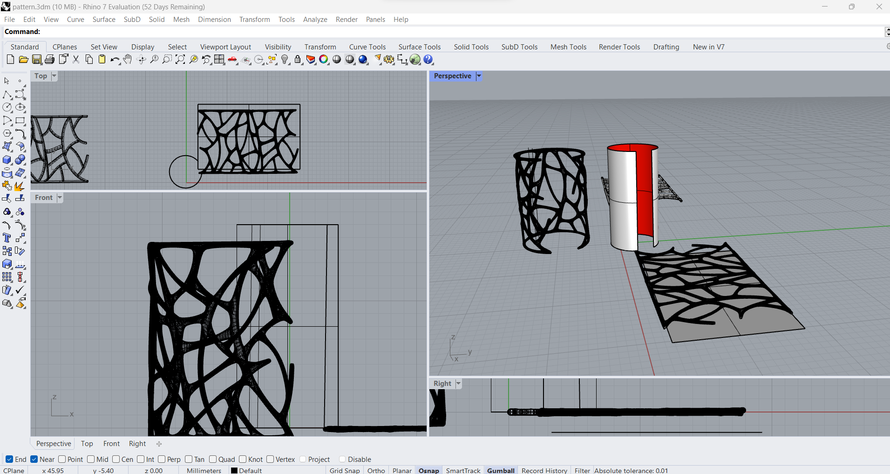I decided I wanted print something off thingiverse, and this lamp is what I found that I liked.
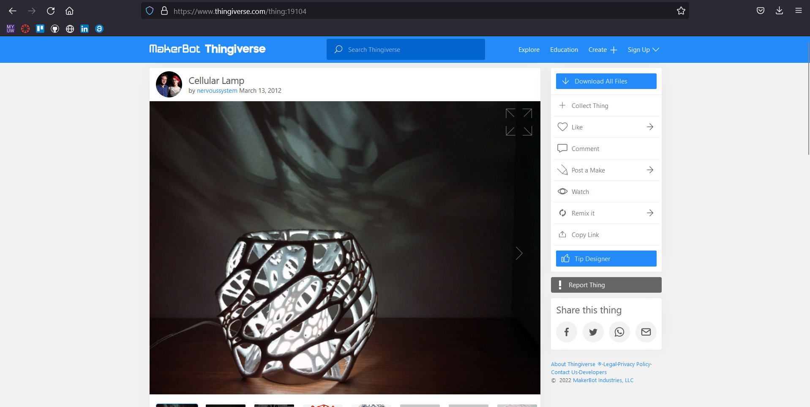So I started design a base to put the lightbulb in, and I started printing it, I don't know why because I very quickly realized that printing the lamp off thingiverse would take 1 day and 23 hours and I literally did not have that much time because I procrastinated. So I canceled the base print but I had this disk and it inspired my new idea.
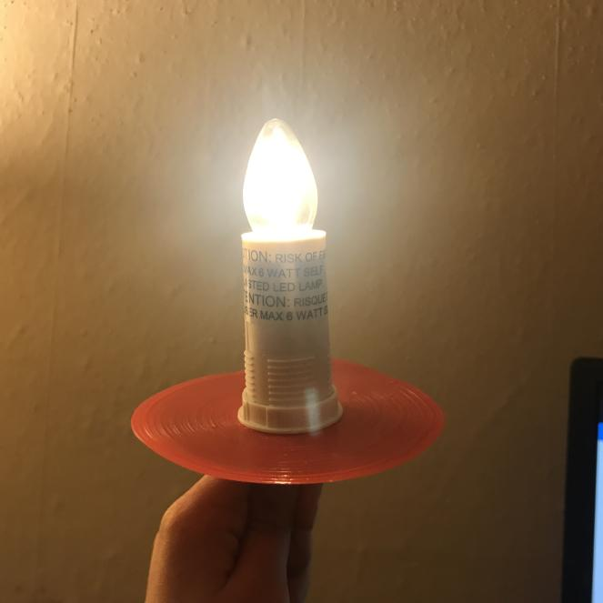My new idea was to print off a bunch of these pentagons and hot glue them together to make a thin dodecahedran and the light shine through. Note: I did not use any glue to attach the lamp innerds to the 3d printed part. I only used glue to put the 3d printed parts together.
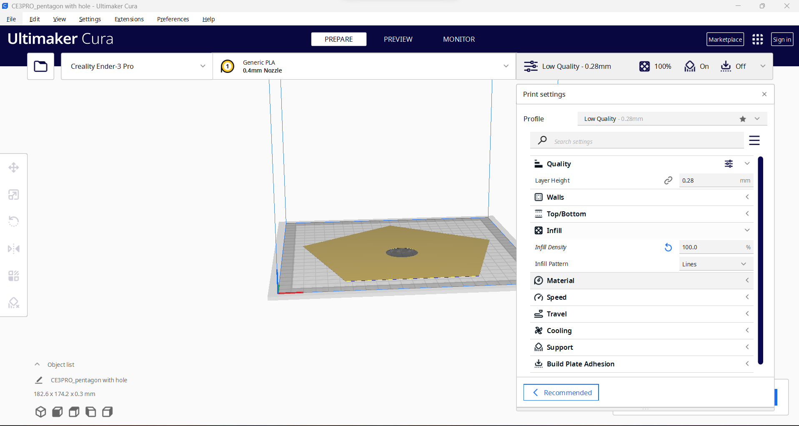Here are some pentagon tests I made.
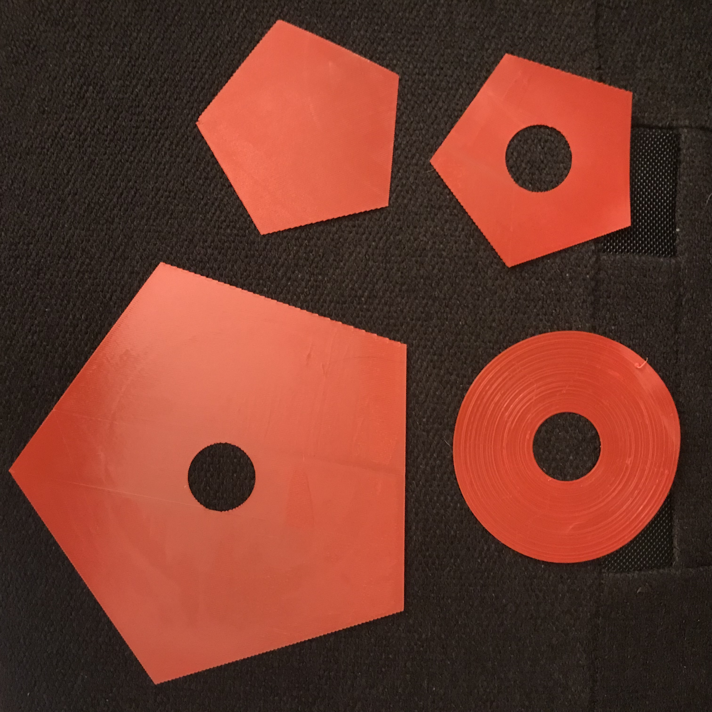Then I had the idea to combine what I had tried to do before with the cool patterns with my new idea of a dodecahedran lamp.
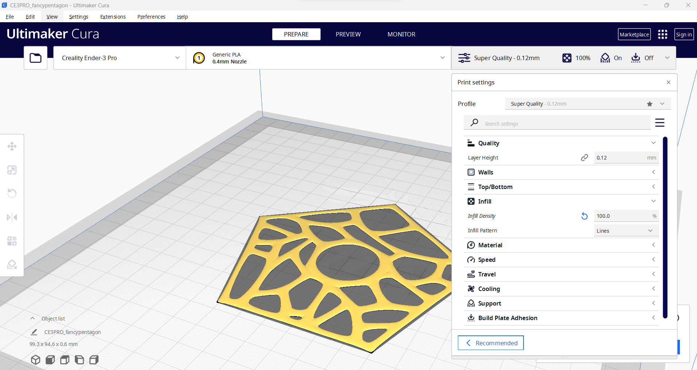Using the pentagon tests to determine the proper size, this is what I decided to be the final design. Only one of the pentagons would have
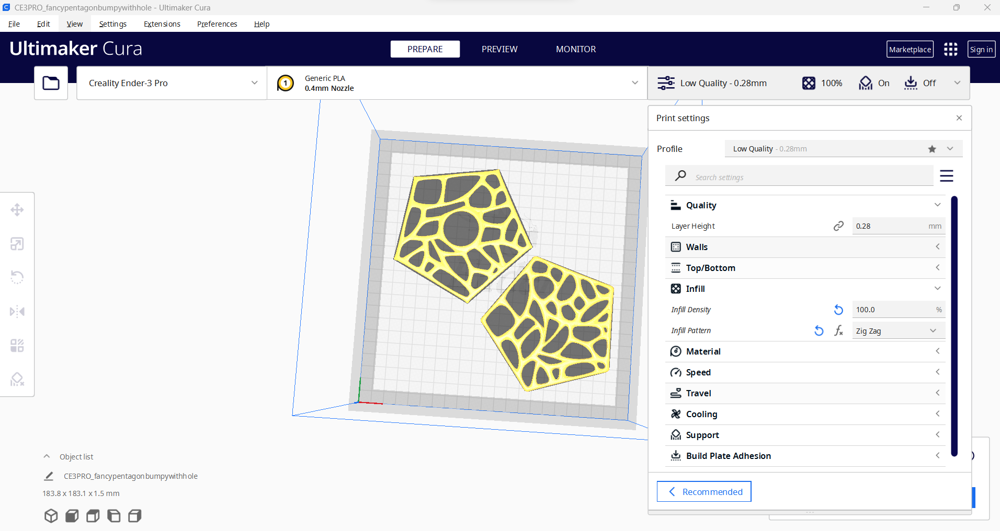I taped parts of the lamp to my desk in order to glue on the other sides.
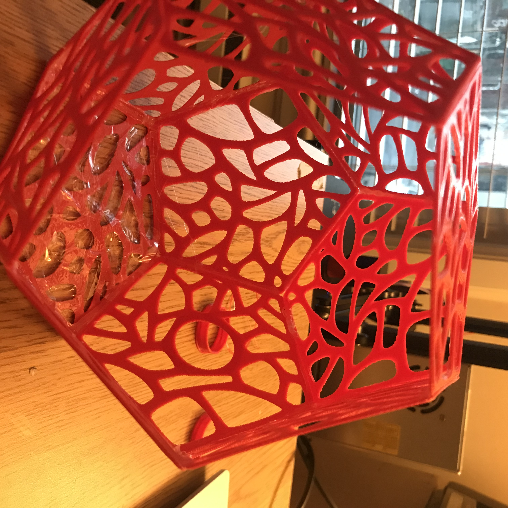I liked how it looked, but I realized that the way I was planning for the light to stay on wouldn't really work because then you wouldn't be able to take it out.
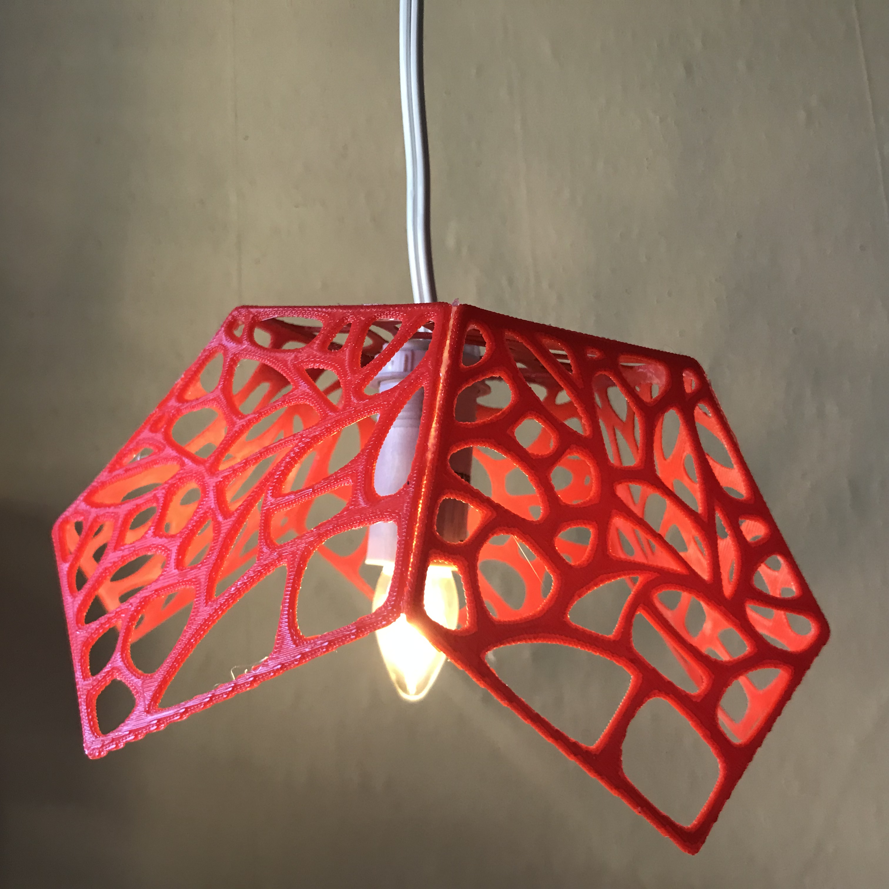The light part has this plastic nut to screw it onto the original light fixture (I took the innerds from an idea lamp) so I thought I could glue it to the outside of the lamp fixture. But it would not stay on.
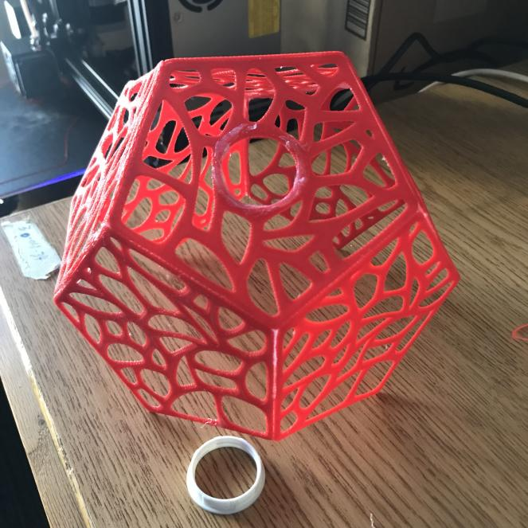I observed that the ikea plastic couldn't be hot glued but the PLA could, so I had the amazing idea of making my own nut that would screw on! (Was not actually a good idea).

The first time I printed it was too small I had to do it again. Meanwhile I am still printing and glueing pentagons.
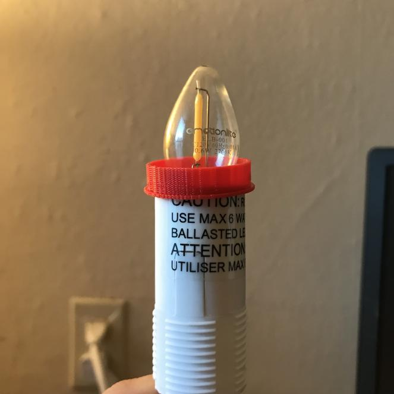So it turns printing something that will screw onto a preesxisting object is very hard (woah!) so even at the right size it didn't totally work, but I realized the light could just be shoved into the nut (no screwing) and it stayed so that is how I attached the innerds to the outer ficture. I also printed off some cylinders to cover the ugly ikdea plastic attached to the lightbulb. And here is my final lamp!
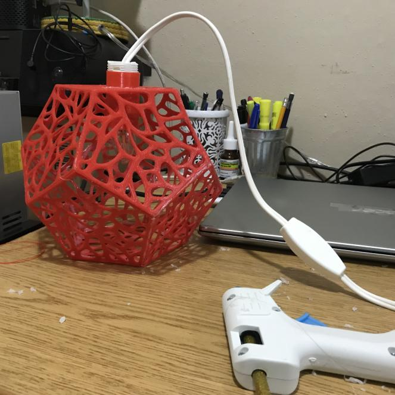And here is a fancy picture of the lamp!
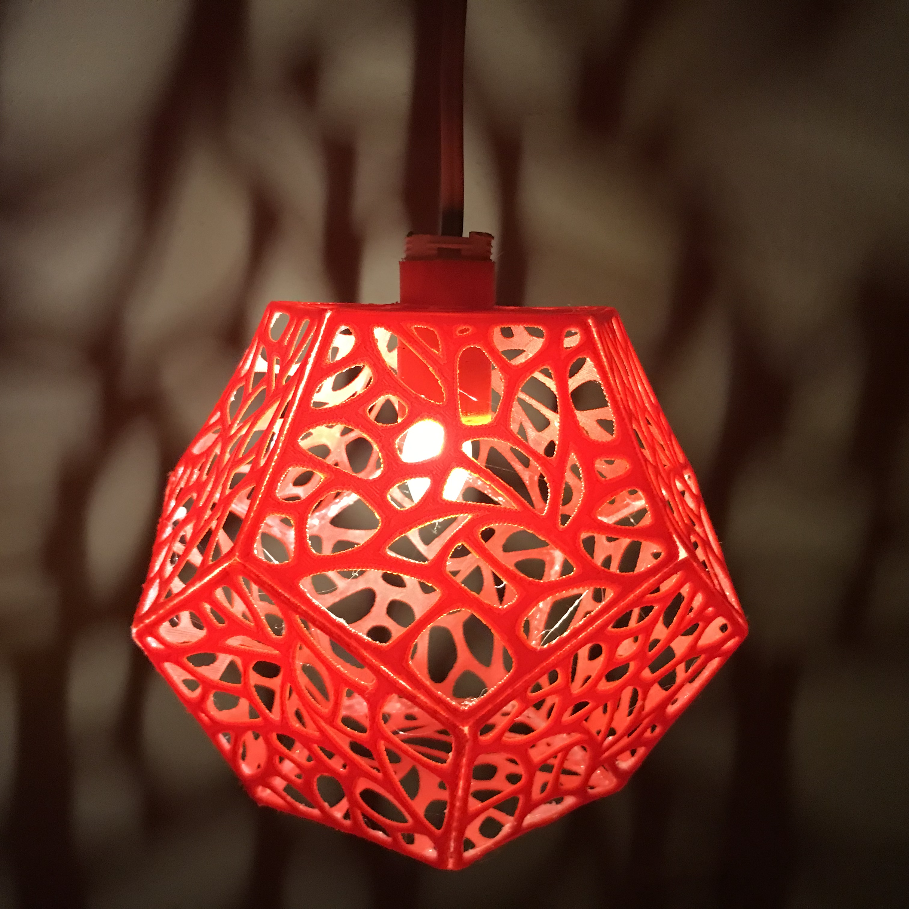This is my Github Repository with all the models and stl files.
Part 2: Molds Part 1
I am going to make a candle of the little ghost with a top hot I made last week. I know people who make candles out of 3d printed molds so I know it's possible.